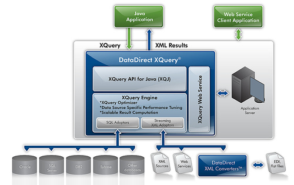

DataDirect XQuery® Architecture
The following illustration provides a high-level architectural overview of DataDirect XQuery.

When you execute a query using DataDirect XQuery, DataDirect XQuery might processes the query in the following fashion:
- A Java application passes a query to the DataDirect XQuery implementation of XQJ.
- The XQuery Engine analyzes the query and divides it into one or multiple XQuery expressions to be processed by the adaptors.
- The XQuery Engine sends the query to the SQL adaptor or the Streaming XML adaptor based on its analysis:
- If a relational source is queried, the XQuery Engine sends the query to the SQL Adaptor. The SQL Adaptor translates the query into SQL, which is used to query the database. The SQL Adaptor receives the results and maps them into XML.
- If an XML source is queried, the XQuery Engine sends the query to the Streaming XML Adaptor, which executes the query and returns XML results.
- If a flat or EDI file is queried, the XQuery Engine sends the query to the Streaming XML Adaptor, which relies on the DataDirect XML Converters™ to retrieve an XML representation of the flat or EDI file.
- The adaptors send the XML results to the XQuery Engine. If the XML results are obtained from more than one source, the XQuery Engine combines the results.
- The Java application receives results as XML, using XQJ.